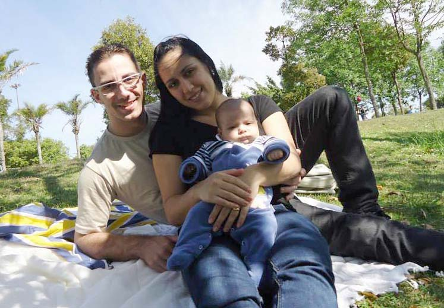

Fernando Donizete Alves | WDD 130
Hello! My name is Fernando Alves, and I'm from São Paulo — Brazil. I love spending time with my family and also with my friends. I like video-games, rock music and board games. And as a Brazilian I love soccer, of course! I'm studying Software Development at BYU and I'm eager to learn a lot about it and apply it at my work!